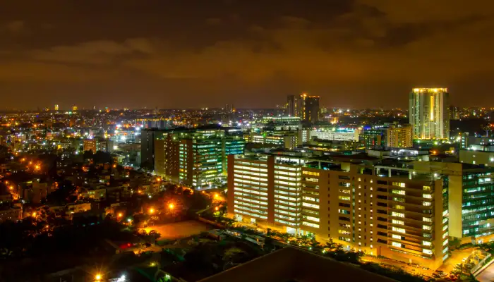

Bangalore - The Silicon Valley

Before it became the Silicon Valley of India, it was already a focal point of politics, commerce, and trade in Karnataka. Bangalore is yet another notable mention in the list of historical places in Karnataka and has palaces, fort and lots of other places to visit. Bangalore offers a sneak peek into the political, cultural, traditional and religious history of the region. Apart from having an interesting history, the places in Bangalore are also a seat of modern and urban living.
Places to Stay: Astam, Legacy, Serene Mist Resort, The Bougain Villa, Mango Mist Resorts, Villa Serena
Places to Visit: Bangalore Palace, Tipu Sultan's Summer Palace, National Gallery Of Modern Art, Vidhana Soudha
Things to do in Bangalore: Explore forts, halls, memorial halls, palaces, gardens and other places; art galleries; museums; fine dining; boating and music concerts
Ideal for: Families, friends, history, nature and archaeological exploration
Ideal trip duration: 2 days
Weather: Bangalore enjoys a Tropical moderate climate with hot summers
Best Time to visit Bangalore: Bangalore can be explored throughout the year; but September to March is the best time.
How to reach Bangalore: Bangalore has an International Airport, railway station and fantastic road network connecting it with all the major parts of Karnataka. So, you can travel as per your preferences.
Go Back